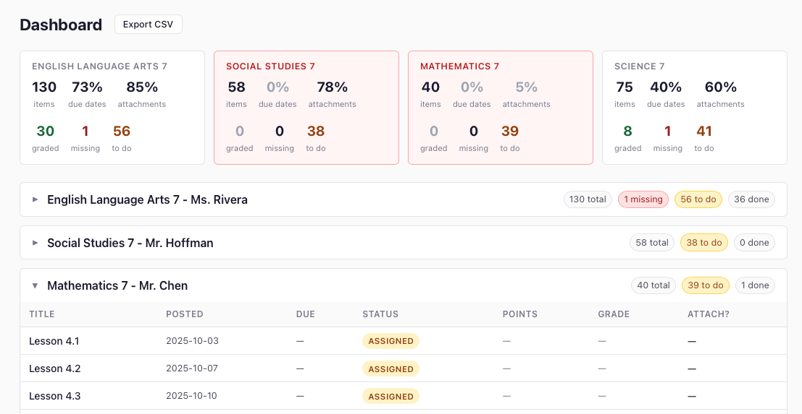

Free & open source
See clearly what's in every class. Every assignment. Every missing piece. No API access required — works with any school.
Transparency for the platform that provides none.

Dashboard view — all classes, all assignments, one page.
You can log in. You can see one class at a time. That's about it. If you need a real picture of what your kid is receiving — or not receiving — Classroom doesn't help you.
You see one class at a time. To check six classes you click six times. There's no "everything in one place" — you have to carry it in your head.
When an assignment is blank, did your kid not submit it — or was it never assigned to them? Classroom won't tell you. You have to ask the teacher.
Your kid's IEP requires certain accommodations. Whether those modifications actually appear in assigned work — extended time, reduced load, modified content — isn't visible anywhere.
By the time you see a bad grade, the assignments behind it are buried. There's no way to go back and see what happened week by week without digging through every class manually.
One teacher posts 140 structured assignments with weekly organization and due dates. Another posts 61 with zero due dates and no instructions. Same school. Same student. Same year. You can't see this difference without clicking into every class one at a time.
Glassroom runs on your computer and stores everything in a local database. No API access. No accounts. No data leaves your machine — except the Google login, which goes directly to Google the same way any browser login does.
Every assignment from every class in a single scrollable view. Color-coded by status so you can see the whole picture at a glance.
Missing, Assigned, Turned in, Graded — shown clearly with color badges. The "To Do" view is filtered to exactly what needs action right now.
Every PDF, document, and slide deck attached to an assignment is automatically downloaded and saved. Evidence that work was or wasn't provided.
Export everything to a CSV for your records, or to a database for advanced filtering, sharing, or handing to an advocate.
Your kid's data never leaves your machine. The only outbound communication is the Google login — the same request your browser makes when you sign into Google. No Glassroom server. No telemetry. No third-party anything.
Run a scrape every day or every week. Glassroom tracks what changed — new assignments, updated statuses, new grades.
I’m building the first real picture of how Google Classroom works for families. If you have a kid using Classroom, your experience matters — even if you never use the tool.
Or take the survey directly → tally.so/r/aQDAxW
This is a transparency tool, not a homework tracker. It's for anyone who needs to know what a student is actually receiving — not just what they're submitting.
Not just what they're submitting. What was assigned, when it was posted, whether it came with instructions and materials — or arrived blank with no due date.
What was and wasn't provided through Google Classroom. Timestamped. Downloadable. Exportable. The documentation you need before the meeting — not after.
And had no way to verify that. Now you do.
Not what the student remembers. What was actually assigned, across all classes, with due dates and materials.
Glassroom creates an exportable, timestamped record of what was assigned and when. The paper trail you can actually hand someone.
You need Docker. That's it. No Python, no code, no technical experience beyond copy-pasting two commands.
Create a folder anywhere, open a terminal in it, and paste these two commands. Docker does the rest.
Visit localhost:3000 and follow the setup steps. Log in, pick your kid's classes, scrape.
# Download the config file and start Glassroom: $ curl -O https://raw.githubusercontent.com/sageframe-no-kaji/glassroom/main/docker-compose.yml $ docker compose up -d # Then open: $ open http://localhost:3000
Glassroom is MIT licensed. No accounts, no subscriptions, no data leaving your machine. Built by a learning systems designer who needed it — shared with every parent, advocate, and IEP team who needs it too.
Built by a learning systems designer with 25 years in K-12 education. Read the research behind Glassroom →
Support this project → Buy me a coffee